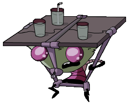

|
 |
Service Drones
Appearances: Hobo 13, Tak: The Hideous New Girl, The Trial |
|
Some Irkens are forced to do work for practically nothing. These are the service drones, which are probably engineered specifically to do work. They are generally the shortest Irkens. Some, like Table headed Service Drone Bob, serve drinks to other Irkens with a table strapped to them. Bob only makes 5 monies every 2 years. Other service drones are used for other specific tasks, like janitorial drones. When Tak missed her exam to become a member of the Irken elite, she was placed on the janitorial squad until she would be allowed to take the test again. |